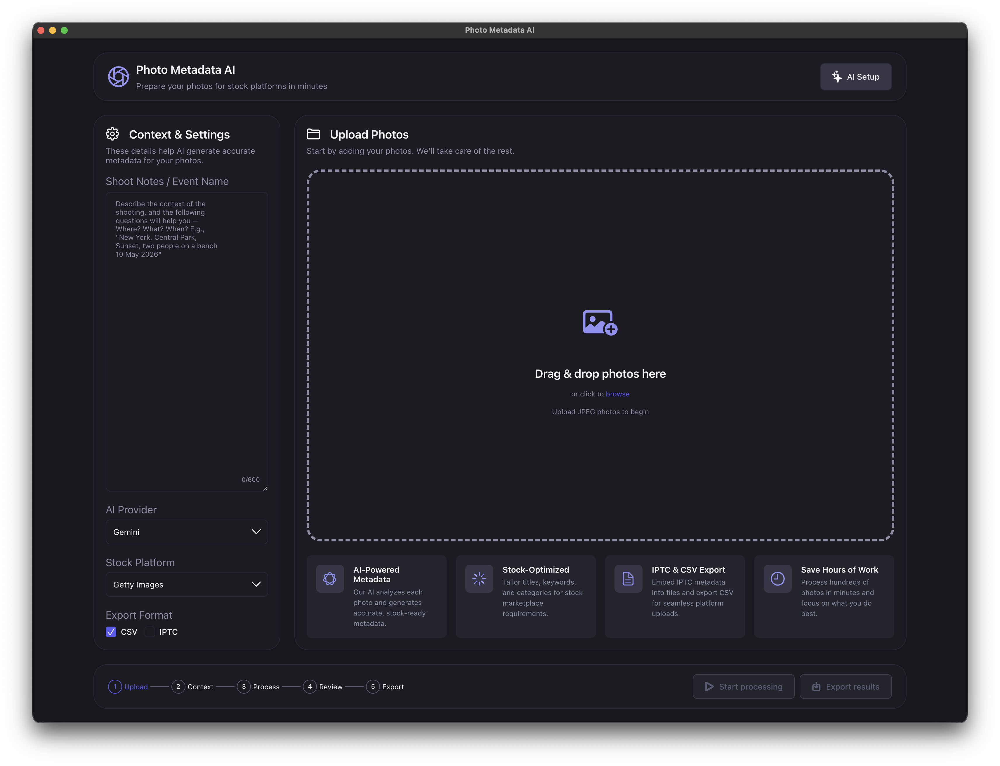
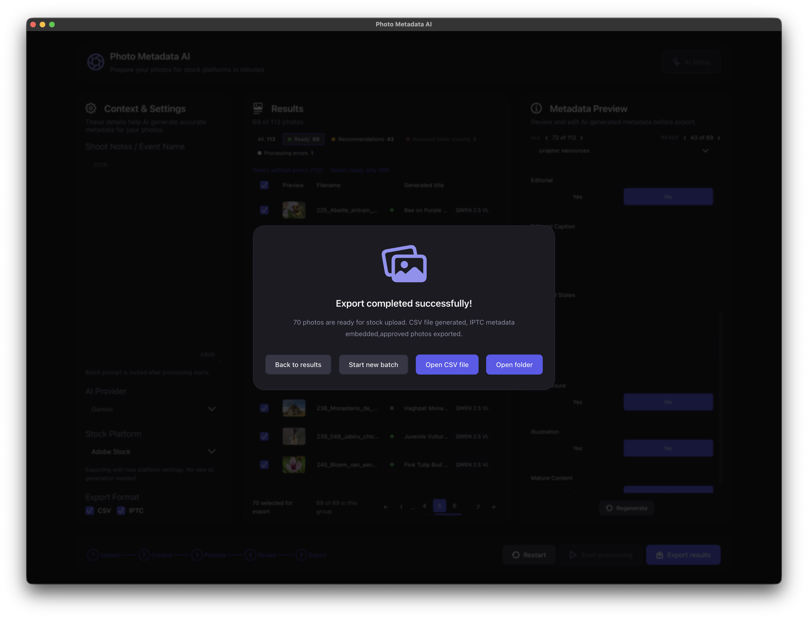
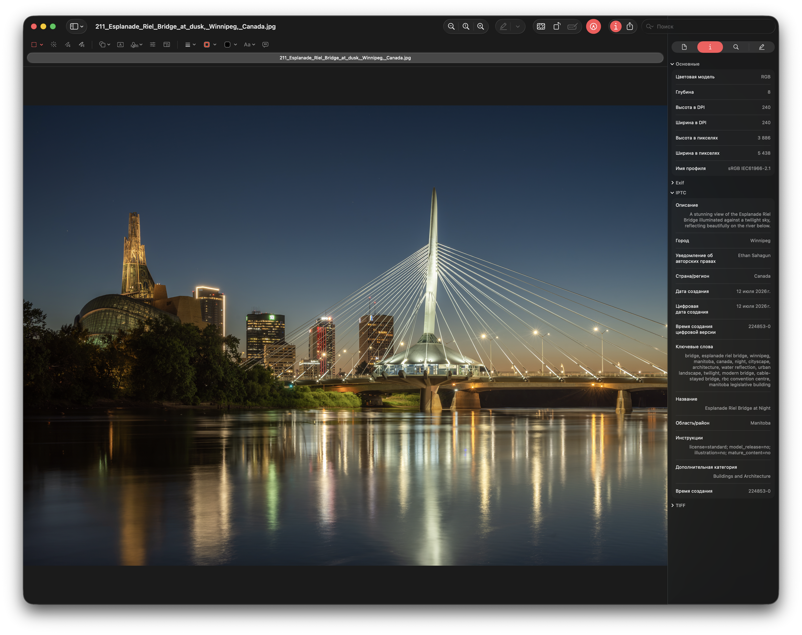

Метаданные для фотостоков за минуты
Десктопное приложение анализирует каждый кадр с помощью AI и генерирует полный набор полей, которых требуют стоки — от заголовка и ключевых слов до лицензии, локации, editorial-блока и релизов. Под Adobe Stock, Shutterstock или Getty Images они пересобираются автоматически, вшиваются в файлы и выгружаются в CSV.

Возможности
Весь путь от папки с кадрами до готовой загрузки
Приложение закрывает рутину, которая обычно съедает вечер после съёмки: описания, ключевые слова, категории, проверку под требования площадки и подготовку файлов.
Пакетная обработка
Загрузка сотен фотографий за раз, прогресс с возможностью отмены и повтор только упавших файлов.
Несколько AI-провайдеров
Локальная модель и облачные сервисы образуют кольцо fallback: при таймауте, 429 или ошибке файл уходит к следующему — с cooldown и адаптивным ограничением параллельных запросов.
Правила стоков — после генерации
Модель не знает про площадку. Лимиты title, число и состав ключевых слов, словари категорий, типы лицензий и editorial-поля накладываются при маппинге, а автофикс правит формальные ошибки. Смена площадки не требует перегенерации.
Проверка перед экспортом
Таблица результатов, панель Metadata Preview, быстрые фильтры и сводка валидации, ручная правка любого поля и перегенерация отдельных файлов. Отредактированные поля отмечены подсветкой подписи — видно, что правил человек, а что сгенерировал AI.
Экспорт
CSV под формат выбранного стока плюс копии фотографий со вшитыми IPTC-метаданными. Можно выгрузить только файлы со статусом Ready или без ошибок.
Онбординг и ключи
Приложение само находит доступные провайдеры, проверяет ключи и хранит их в пользовательском каталоге данных — вне бандла приложения.
Метаданные
Не только заголовок и ключевые слова
За один проход по кадру AI возвращает набор полей намеренно с запасом — чтобы под конкретный сток их можно было урезать, а не догенерировать. Все текстовые поля только на английском, как требуют площадки.
Основное
title минимум из 5 значимых слов, description с законченным фактическим предложением, keywords — не менее 15 уникальных тегов, упорядоченных по убыванию важности.
Классификация
categories — 1–2 широких кандидата, license_type (commercial или editorial), а также флаги is_illustration, mature_content и раскрытие AI-контента.
Локация
Структурные sublocation, city, province_state, country и читаемая строка. Заполняются только когда место действительно известно — модель не догадывается.
Editorial
Признак editorial-съёмки, полная фактическая подпись и дата события — заполняются, когда контекст съёмки действительно указывает на editorial.
Люди и права
Есть ли люди в кадре и сколько их, известен ли model release, список имеющихся релизов — площадки требуют этого для съёмок с людьми и узнаваемой собственностью.
IPTC прямо в файле
Метаданные вшиваются в копии фотографий, а не живут отдельной таблицей: описание, название, ключевые слова, категория и локация едут вместе с кадром.
Маппинг
Один набор — три формата площадок
Правила стока применяются к уже сгенерированным полям, поэтому переключение площадки — это пересборка, а не новый прогон через AI.
| Лимит title | Adobe Stock — 70 символов, Getty Images — 200, Shutterstock — 2048 с предупреждением после 150 |
|---|---|
| Ключевые слова | Adobe Stock — до 49, Getty и Shutterstock — до 50. Дубликаты удаляются, порядок по важности сохраняется |
| Категории | «wildlife» → Nature у Getty, Animals/Wildlife у Shutterstock, Animals у Adobe Stock. Adobe принимает одну категорию, остальные — две |
| Тип лицензии | Getty — creative / editorial, Adobe Stock — standard / extended / editorial, Shutterstock — commercial / editorial |
| Колонки CSV | У Getty есть Category 2, License Type и Editorial Date; у Adobe Stock — AI Disclosure; у Shutterstock — Illustration и Mature Content |
Валидация делит замечания на ошибки и рекомендации, а автофикс чинит формальные: добивает короткий title, обрезает длинный, приводит число ключевых слов к границам, убирает дубликаты, подставляет категорию по умолчанию. Поля, которые вы правили руками, автофикс не трогает.
Как работает
Мастер из пяти шагов
Линейный сценарий без скрытых настроек: на каждом шаге видно, что уже сделано и что осталось.
Upload
Перетащите JPEG-файлы в окно или выберите их в диалоге.
Context
Заметки о съёмке, AI-провайдер, сток и формат экспорта.
Process
Генерация полей без привязки к площадке, прогресс, отмена и повтор упавших.
Review
Поля пересобраны под сток: проверка, правка, фильтры, перегенерация.
Export
CSV и копии фотографий с метаданными — в папку результатов.
Скриншоты
Как это выглядит в работе
Снято 3 августа 2026 года на macOS, сборка Photo Metadata AI 1.1.0-universal.


Приватность
Работает локально
Фотографии не покидают компьютер — кроме кадров, которые вы сами отправляете выбранному AI-провайдеру. С локальной моделью обработка полностью офлайн.
- Ключи хранятся у вас — в пользовательском каталоге данных, вне бандла приложения.
- Никакого сервера посередине — бэкенд запускается на вашей машине на
127.0.0.1. - Данные переживают обновление — результаты и настройки лежат вне
.app.
AI-провайдеры
Форматы стоков
Провайдеры образуют кольцо fallback, поэтому один упавший ключ или таймаут не останавливает пакет: файл уходит к следующему провайдеру.
Установка
Две минуты до первой обработки
Откройте образ
Скачанный .dmg монтируется двойным щелчком.
Перетащите в Applications
Перенесите «Photo Metadata AI.app» в папку программ.
Пройдите AI Setup
Подключите локальную модель и/или введите ключи облачных провайдеров.
Сборка universal2 — работает и на Apple Silicon, и на Intel. Приложение само сообщает баннером о новой версии; загрузка и установка ручные.
Локальная модель (опционально)
brew install ollama
ollama serve
ollama pull qwen2.5vlПод капотом
| Backend | Python 3.11+, FastAPI, Uvicorn, Pydantic, aiohttp, httpx, Pillow, structlog, iptcinfo3, uv, Ruff, pytest |
|---|---|
| Frontend | React 18, TypeScript, Zustand, Sass, axios, react-scripts, Jest и Testing Library |
| Desktop | Electron 33, electron-builder, PyInstaller (universal2), Jest |
Electron запускает бинарник бэкенда, FastAPI раздаёт собранный React-фронтенд — один origin, без CORS.
Освободите вечер после съёмки
Загрузите папку с кадрами, проверьте сгенерированные поля и выгрузите готовый пакет для стока.